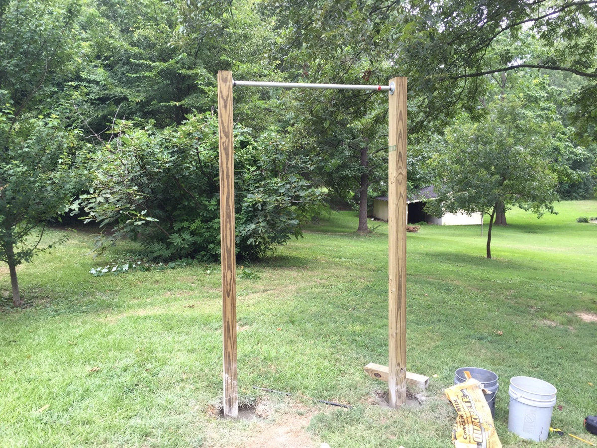

Yleistä sivustosta
Tämän sivun tarkoituksena on kertoa kehonpainoharjoitteista ja niiden hyödyistä sekä asemaa Suomessa. Lisäksi sivusto ohjaa kehonpainoharjoitteluun liittyviin sivuihin ja pyrkii muita innostumaan harjoittelusta jakamalla materiaalia ja tietoa
Kehonpainoharjoittelu
Kehonpainoharjoittelu on hyvä harjoittelumuoto kropan omien tukilihasten vahvistamiseen. Siinä ei myöskään rasitu mivelet samalla lailla kuin perinteisessä punttisaliharjoittelussa. Se ei myöskään kuormita selkää samalla tavalla kuin punttisaliharjoittelu. Kehonpainoharjoittelulla on myös mahdollista hankkia lihasmassaa, koska kroppa ei teidä onko vastuksena oma keho vai ulkopuolinen vastus.
Harjoittelupaikat
Parasta kehonpainoharjoittelussa on se, että ei tarvitse erikseen mennä minnekkään harjoittelemaan. Vaan kannat "välineistöäsi" mukana, joten ikinä ei tule tekosyitä jättää harjoittelematta.